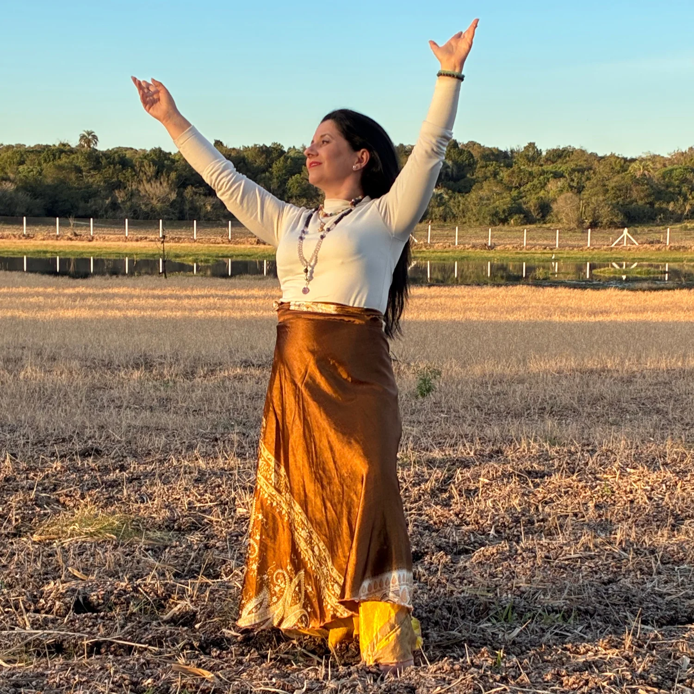
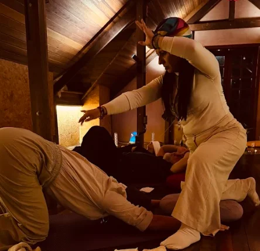
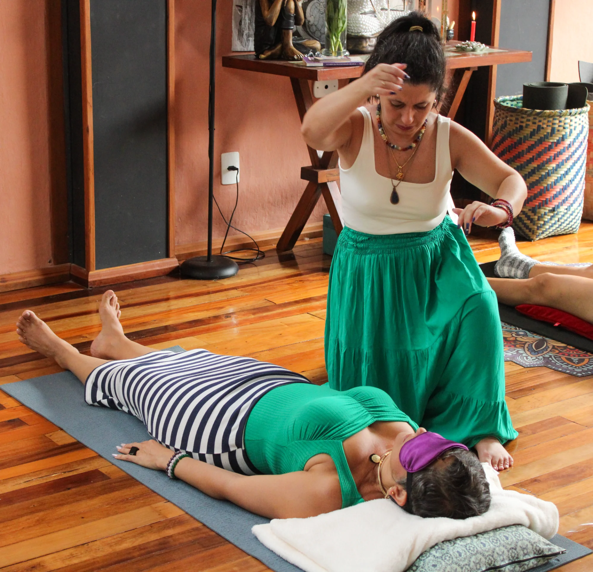
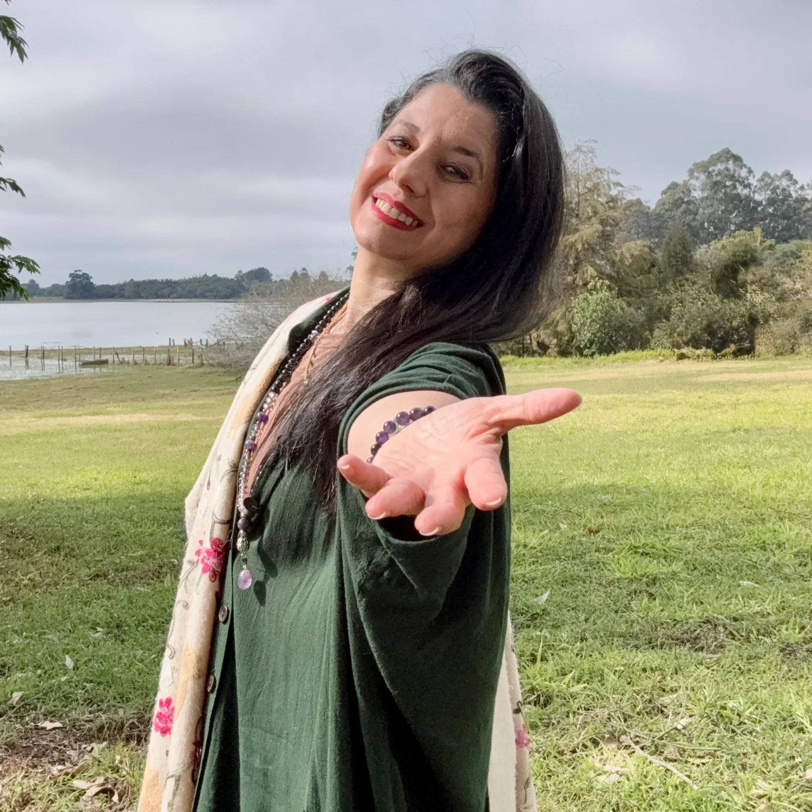

Formação de Facilitadores & Despertar da Própria Energia
Ele desperta quando você está pronta para sustentar a sua própria energia.
Quero saber maisTalvez você já tenha feito terapias. Buscado respostas, cursos, ativações, iniciações.
E ainda assim… sente que existe algo mais profundo pedindo para despertar.
O Renascimento Kundalini surge exatamente nesse ponto:
quando a alma está pronta para parar de buscar fora e começar a sustentar a própria energia com consciência.
Esta formação não é para curiosos. É para quem sente que já não dá mais para adiar o próprio Renascimento. O chamado é urgente — as vagas, não.

Estruturado e seguro, desenvolvido por Kelen Silva a partir de anos de prática, pesquisa e vivência.
Consciente, responsável e amorosa. Sem excessos ou promessas de ativações rápidas e desintegradas.
Reconhecida para quem deseja atuar como facilitadora ou facilitador de forma segura e ética.
Corpo, campo energético e psique preparados antes de qualquer processo de ativação.
Você aprende a integrar e sustentar a energia no cotidiano — não só durante as vivências.
Clareza e responsabilidade para ler, conduzir e integrar o campo energético com presença.

Certificado de Formação Renascimento Kundalini — atue como facilitadora, integre em atendimentos e utilize o método com ética e responsabilidade.
Vagas limitadas por responsabilidade energética.
Reservar vagaIdeal para quem sente o chamado, mesmo à distância.
Inscrever-seNão é obrigatório atender pessoas. A formação respeita o caminho individual de cada alma.

Kelen atua há anos guiando pessoas em processos profundos de despertar da consciência, ativação energética e integração espiritual.
Sempre com condução ética, amorosa e ancorada — longe dos excessos que frequentemente cercam o universo Kundalini.
"Sua missão é guiar almas no processo de lembrança de quem elas são."
"Você não sai a mesma pessoa que entrou. Você sai mais inteira, mais consciente, mais presente."
Entre em contato para saber mais sobre a formação, tirar dúvidas ou garantir a sua vaga. As vagas presenciais são apenas 10.